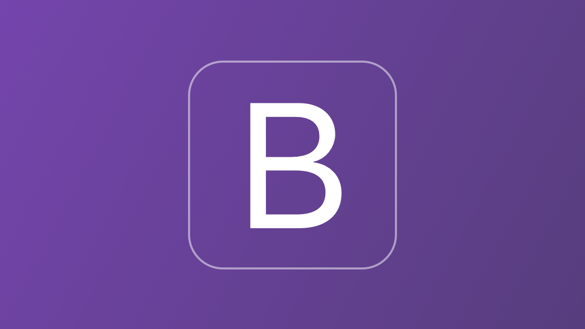

Bootstrap
Pelajari Bootstrap untuk membuat website yang responsif dan modern dengan cepat. Di course ini, kamu akan mengenal komponen, grid system, dan utilitas yang memudahkan desain tanpa harus menulis CSS dari awal.
Daftar Materi
-
01Pengenalan Bootstrap20 min
-
02Persiapan & Instalasi20 min
-
03Konsep Grid System36 min
-
04Typography & Text Utilities40 min
-
05Warna & Background Utilities12 min
-
06Spacing Utilities40 min
-
07Layout & Components Dasar8 min
-
08Form & Input Styling25 min
-
09Image, Media, dan Icon18 min
-
10Flexbox & Utilities45 min
-
11Responsive Design & Breakpoints45 min
-
12Advanced Component45 min
-
13Customization & Theming45 min
-
14Integrasi dengan JavaScript45 min
-
15Project45 min
Detail Materi
Durasi
2.5 Jam
Total Materi
12 Modul
Tipe
Front-End
Tentang Materi
Course Bootstrap ini dirancang untuk membantumu membangun website profesional dengan lebih efisien. Kamu akan belajar memanfaatkan grid, komponen siap pakai, dan fitur responsif untuk membuat tampilan web konsisten di berbagai perangkat.
Cocok untuk pemula maupun front-end developer yang ingin mempercepat proses desain dan membuat website modern tanpa ribet.
Apa yang akan kamu pelajari?
- Memahami konsep dan sejarah Bootstrap serta evolusinya dari versi awal hingga Bootstrap 5
- Mengetahui cara instalasi Bootstrap melalui CDN, NPM, dan setup manual (offline)
- Menguasai sistem grid 12 kolom dan cara membangun layout responsif
- Mengatur tipografi, warna, background, border, dan shadow dengan utilities
- Menggunakan sistem spacing dan positioning untuk mengatur tata letak dengan presisi
- Membuat komponen dasar seperti navbar, card, button, alert, modal, dan accordion
- Mendesain dan memvalidasi form dengan gaya Bootstrap yang modern
- Menampilkan gambar, video, dan icon secara responsif menggunakan Bootstrap utilities
- Membangun layout fleksibel menggunakan sistem Flexbox dan helper utilities
- Mengimplementasikan responsive design dengan breakpoint class (sm, md, lg, xl, xxl)
- Menggunakan komponen tingkat lanjut seperti carousel, toast, offcanvas, dan dropdown
- Menyesuaikan tampilan dan warna default Bootstrap menggunakan variable SCSS
- Menerapkan custom theme dan dark mode di proyek Bootstrap
- Mengintegrasikan komponen JavaScript Bootstrap tanpa jQuery
- Menggunakan data attribute (data-bs-toggle, data-bs-target) untuk interaksi dinamis
- Menggabungkan Bootstrap dengan framework lain seperti React, Laravel, dan Tailwind
- Membangun website lengkap yang responsif dan interaktif menggunakan Bootstrap